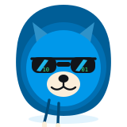

The brain you offload to AI
should be unreadable, and impossible to delete.
An AI second brain, encrypted on your machine — only you hold the key — stored where no platform can read or delete it.

Encrypt the notes and chats you feed to AI on your own machine, turn them into a queryable second brain, and publish it to TON Storage + .ton DNS. Three layers: Cipher, Brain, Mesh.
The more you offload to AI, the more your second brain lives inside a platform — deletable, alterable, and readable by whoever runs it. Your most personal data is the one you own least.
Three layers in one tool: Cipher encrypts on-device, Brain makes your memory queryable, and Mesh (the shipping ton-mesh-harness) puts it beyond any single party’s reach.
.ton DNS via ton-mesh-harness — no host to seize, owner-signed only.An encrypted blob is useless if its address can be seized. TON is the one stack that pairs immutable storage with an on-chain name no one can take and a private transport — built by Telegram’s team as a digital-resistance stack.
Not a slide. The Mesh and Brain layers each run today; the Cipher layer and the wiring between them are what’s left.
ton-mesh-harness is open-source on npm with verified on-chain deploys on TON mainnet. One command ships any build to a bag + .ton DNS — and an AI agent can drive it via MCP.ton-mesh-harness) ships on mainnet and the Brain layer (GBrain) runs nightly — but they aren’t joined yet, and the Cipher layer isn’t built. We say it plainly because censorship-resistant is not the same as private — closing that gap is the point of Cipher Brain.